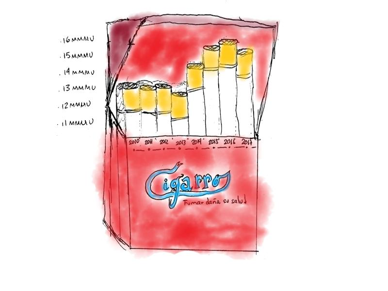
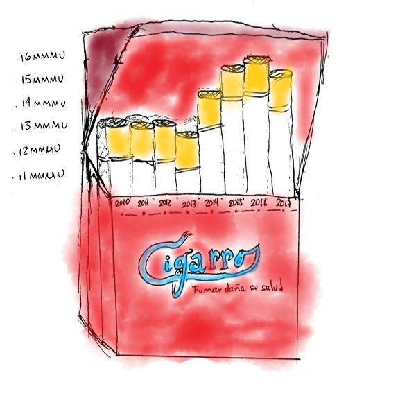
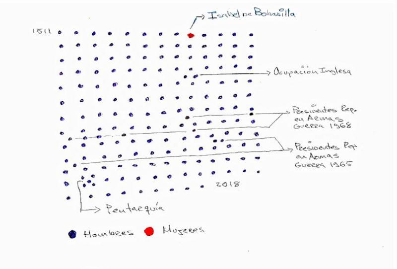
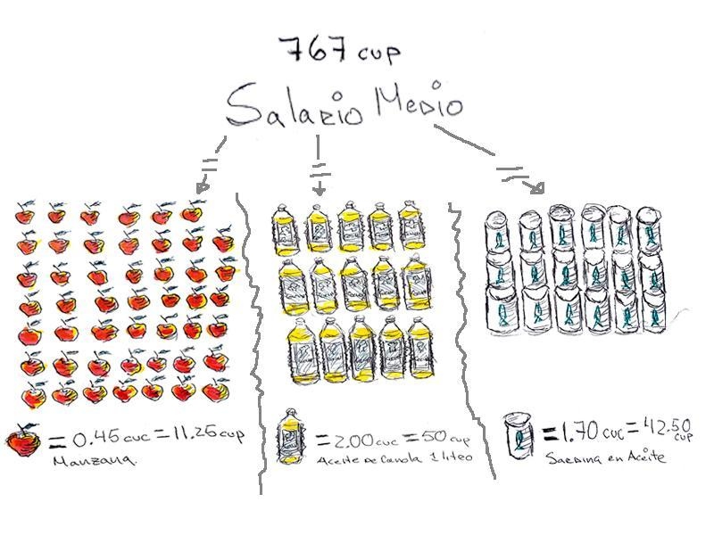
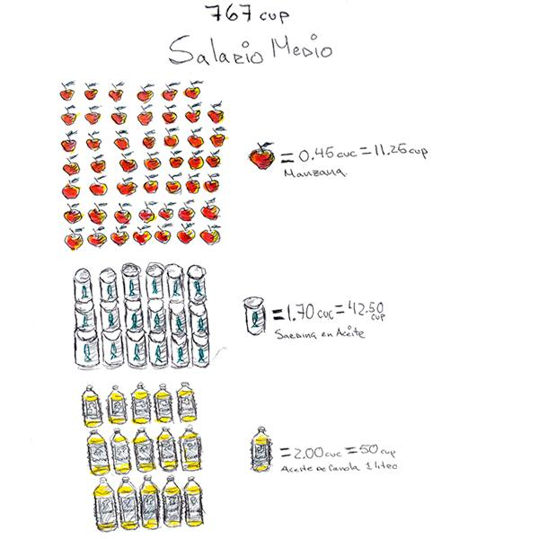

Muchas veces, mientras estamos trabajando, encontramos datos que, aunque relevantes, no
siempre llegan a convertirse en una historia. Hace tiempo que queríamos hacer un resumen de algunos de esos datos
y proponerlos como viñetas sencillas.
Parte del proceso de hacer nuestros trabajos, consiste en hacer bocetos de los los gráficos que acompañan o sustentan nuestros textos.
Normalmente, pintamos las posibles visualizaciones en hojas sueltas o en nuestras agendas y luego tratamos de llevarlas, en su
realización digital, al sitio.
Para hacer periodismo de datos, creemos, no siempre es necesario tener acceso a una computadora, por eso consideramos
que sería divertido compartir varios de nuestros bocetos, esos que pintamos a mano y no se graduaron en historias.
Esta es la primera de una serie de dibujitos que esperamos seguir compartiendo con ustedes,
para, como nosotros, intentar ver los datos a través de garabatos hechos a mano alzada con lápices y plumones.
Ranking de edificios altos en La Habana
El edificio más alto de La Habana aún no existe. Se trata de un hotel que se terminará, dicen, dentro de alrededor de 13 meses,
y que medirá 154 metros de altura, 27 más que el Habana Libre. El nuevo hotel será, entre los edificios más altos de La Habana,
el único construido después de la Revolución, puesto que el Habana Libre era, también, la más moderna de las construcciones más altas
de nuestra capital y fue inaugurado en 1958.
La producción de cigarros en Cuba
Si bien en 2017 la producción de cigarros en Cuba fue menor que la del año anterior, esta ha crecido desde 2010.
Con el aumento de la producción en los últimos 4 años, evidentemente, también se ha incrementado el consumo per cápita de cigarros
entre la población 15 años y más. Ello puede ser una ser una buena señal en términos económicos.
Sin embargo, aquellos que investigan el asunto desde el punto de vista médico notarán que este aumento puede incrementar, en la población,
los problemas de salud que, a la larga, produce la adicción al tabaco.


Solo una mujer al frente del gobierno
La dirección de los destinos de Cuba, dentro de nuestras fronteras, ha sido abrumadoramente masculina.
Ha habido, incluso, períodos donde simultáneamente dos hombres diferentes han tenido el poder legal.
Primero fue la ocupación inglesa, durante la cual los españoles gobernaron desde Santiago de Cuba y los ingleses
en La Habana. Luego, con las guerras por la independencia, hubo presidentes de la llamada República en Armas a la par de los Gobernadores
Generales ibéricos. Hasta existió una pentarquía durante la neocolonia. Sin embargo, hasta 2018, y durante 5 siglos, solo una mujer
ha sido la principal gobernadora de los destinos de Cuba. Su nombre era Isabel de Bobadilla y asumió los cargos de Gobernadora
y Capitana General por sustitución, luego de que su esposo, Hernando de Soto, partiera a La Florida.
Su gobierno, transcurrido entre los años 1539 y 1544, puede olvidarse a veces, pero su figura inspiró el símbolo de La Habana:
la veleta conocida como La Giraldilla.

Equivalencias del salario medio
El salario medio en Cuba en 2017 fue de 767 CUP (pesos cubanos).
Esta cantidad, al cambio actual, equivale a poco más de 30 CUC que es la otra moneda que circula en la Isla.
Con esa cantidad de dinero una persona debiera ser capaz de satisfacer sus necesidades durante un mes,
aunque parte de estas están cubiertas, por los productos de la canasta básica que se entregan cada mes en las bodegas,
el transporte público y los medicamentos, en su mayoría con precios subvencionados. Sin embargo, esto no es así
y uno tiene que complementar sus necesidas en tiendas con precios en CUC y sin subvención alguna. Si una persona
decidiera gastar todo su salario en uno de esos productos que habitualmente solo se adquieren sin subvención en esas
tiendas ¿a cuánto equivaldría su salario, por ejemplo, en manzanas, litros de aceite o latas de sardina?


La Habana ¿no aguanta más?
La Habana alberga la mayor población del país. A la población de la capital le sigue la de Santiago de Cuba,
pero estamos hablando de una provincia con un área 8 veces mayor que la capital que es la provincia más pequeña de todas.
¿Qué pasaría entonces si La Habana fuera del tamaño de otras regiones con una población equivalente?
Esto, digamos, en comparación con otras provincias del país. Así uno notaría que en los 721 km2 que ocupa la capital,
viven los mismos pobladores que toda la región occidental, más los de Ciego de Ávila. Quizás esto motivó que los Van Van cantaran en 1986
que “La Habana no aguanta más”. Pero, teniendo en cuenta los datos de migración interna del anuario estadística, parece que si, que si